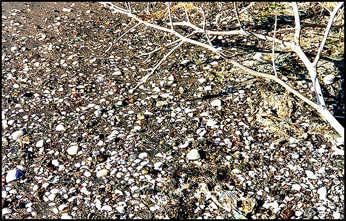

Ανάλογα με τα φυσικά και τα μορφολογικά χαρακτηριστικά του νερού και του θαλάσσιου πυθμένα, η θάλασσα χωρίζεται σε ζώνες, στην κάθε μια από τις οποίες επικρατούν σχετικά παρόμοιες συνθήκες. Επίσης, σε κάθε ζώνη θα συναντήσουμε συγκεκριμένες κατηγορίες οργανισμών, οι οποίοι ζουν προσαρμοσμένοι στο ανάλογο περιβάλλον.
Οι πρώτες τέσσερις ζώνες ξεκινώντας από την παραλία προς τα μεγαλύτερα βάθη συγκροτούν το φυτικό σύστημα (phytal) και είναι η υπερπαραλική, η μεσοπαραλιακή, η υποπαραλιακή και η περιπαραλιακή. Στη συνέχεια ακολουθούν η βαθύαλη, η αβυσσαία και η αδαία ζώνη, που συγκροτούν το αφυτικό σύστημα (aphytal), δηλαδή το σύστημα που δεν περιλαμβάνει φυτά λόγω της έλλειψης φωτός.
Υπερπαραλιακή ζώνη
Η ζώνη αυτή δεν καλύπτεται από την θάλασσα ποτέ, αλλά υγραίνεται μόνο από τον ψεκασμό των κυμάτων. Οι φυτικοί οργανισμοί που ζουν στην ζώνη αυτή είναι οι μαυρόχρωμοι λειχήνες, μονοκύτταρα φύκη όπως κυανοφύκη και χλωροφύκη, ενώ οι ζωϊκοί οργανισμοί περιλαμβάνουν μικρά σαλιγκάρια και πεταλίδες. Όλοι οι οργανισμοί της ζώνης αυτής, είναι ικανοί να αντιμετωπίζουν τις μεγάλες μεταβολές στην θερμοκρασία και στην αλατότητα, καθώς επίσης και την εναλλαγή ξηρασίας-υγρασίας που χαρακτηρίζουν την ζώνη.
Μεσοπαραλιακή ζώνη
Είναι η ζώνη που καλύπτεται και αποκαλύπτεται περιοδικά από την παλίρροια. Στη ζώνη αυτή συναντάμε κυανοφύκη, ορισμένα μακροφύκη, γαστερόποδα, θυσανόποδα, πεταλίδες, δίθυρα μαλάκια, πολύχαιτους, ισόποδα και αμφίποδα.
Υποπαραλιακή ζώνη
Είναι η ζώνη που καλύπτεται πάντα από το νερό και προσφέρει τις καλύτερες προϋποθέσεις για την ανάπτυξη της θαλάσσιας ζωής. Το βάθος της στη Μεσόγειο κυμαίνεται από 30-40 μέτρα που είναι το μέγιστο βάθος παρουσίας φωτόφιλων φυκών και ανώτερων φυτών. Σε βραχώδες υπόστρωμα συναντάμε ανεμώνες, αχινούς, σπόγγους, κ.ά. και φωτόφιλα μακροφύκη. Σε αμμώδες υπόστρωμα συναντάμε πολύχαιτους, καρκινοειδή, αστερίες και λιβάδια ανώτερων φυτών.
Περιπαραλιακή ζώνη
Η ζώνη αυτή εκτείνεται από το όριο όπου υπάρχουν φωτόφιλα φύκη έως το μέγιστο βάθος που υπάρχουν σκιόφιλα φύκη (προσαρμοσμένα σε συνθήκες χαμηλής ακτινοβολίας). Το μέγιστο βάθος της στη Μεσόγειο είναι τα 120 μέτρα. Στη ζώνη αυτή συναντάμε μεγάλη ποικιλία ζώων όπως σπόγγους, κοράλλια, καβούρια, αστακούς, αστερίες, αχινούς, δίθυρα κά. Αντίθετα τα φυτά είναι περιορισμένα και περιλαμβάνουν μόνο σκιόφιλα είδη αφού το φως στη ζώνη αυτή είναι πολύ λίγο.